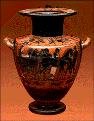
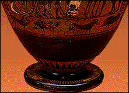

The Minneapolis Institute of Arts
Main Museum Menu ~
Educational Programs ~
Curriculum Materials ~
Teaching the Arts Catalog
Curriculum Materials: World
Mythology

Image 7
Hydria
Antimenes painter
Greece
530-500 B.C.
Terra-cotta
20 1/8 inches high
The John R. Van Derlip Fund 61.59
Key Ideas
- To the people of ancient Greece, the hero Herakles
(HAIR-a-kleez) embodied the best of mortals and Gods. Stories of
his accomplishments were very popular.
- This black-figure vase, called a hydria (high-DREE-a), is a
good example of the qualities of harmony and
SYMMETRY, highly prized by
the Greeks in their art.
- The Greeks thought of their gods as humans, as the paintings
on this hydria show.
Story
Herakles was the son of the great god Zeus (zoose) and a mortal,
Alcmene (alk-MEE-nee). Zeus had tricked Alcmene into believing
that he was her husband. Zeus's wife, Hera, was so jealous of her
husband's love for Alcmene that she made Herakles' life miserable.
When Herakles was a grown man with a family of his own, Hera sent
madness upon him and drove him to kill his entire family. He went
to the ORACLE at Delphi
(DEL-fie) to seek penance for his horrific crime. The oracle told
him that he had to go see the king of Mycenae (my-SEE-nee) and do
whatever the king had told him to. When he completed the deeds,
his sins would be forgiven.
The king of Mycenae first ordered Herakles to kill the Nemean
(nee-MEE-un) lion that had been threatening a nearby village for
many years. The village people told him it could not be killed by
weapon or arrow. Herakles tried to shoot the lion, but his arrows
could not wound the beast. Finally, he wrestled the lion to the
ground and strangled it with his hands. He kept the skin as proof
and wore it as a cloak, which gave him even greater strength.
Herakles' second task was to capture a savage boar from the
mountain of Erymanthus (err-a-MAN-thus). Herakles trapped the
fearsome boar and brought it back alive to the king to prove he
had accomplished his task. The king was so frightened by the beast
that he ran and hid in a bronze jar.
Much to everyone's amazement, Herakles went on to successfully
complete ten more seemingly impossible tasks. Because of him, many
people lived without fear. Zeus was so impressed by Herakles'
strength, courage, and hard work that he made him a god. Athena
(a-THEE-na) the goddess of war, wisdom, and the arts, came down
from Mount Olympus (OH-limp-US) in her chariot to carry Herakles
to live among the gods.
Background
Herakles
Parts of Herakles' story are probably based on the life of a
historical figure, while other parts seem to be taken from the
myths of other eastern Mediterranean countries. In Greek
mythology, the hero Herakles personified physical strength and
courage. His repeated triumphs over evil, particularly his
successful completion of the 12 labors, earned him god status.
Throughout the ancient Greek world, Herakles was worshiped as a
protector.
History
Herakles was the most popular hero in 6th-century Athens, even
though none of his exploits was performed there. He appears
frequently on Athenian vases. Herakles' popularity was due in part
to his association with Athena, the patron goddess of Athens. She
protected Herakles against the evil doings of Hera.
In his efforts to gain control of Athens, a 6th-century tyrant
named Peisistratus (pie-sis-trot-us) took advantage of the
well-known relationship between Athena and Herakles. He wanted
people to think of him as a modern Herakles-strong, unbeatable,
and heroic, so he staged a chariot procession to the Acropolis
(a-CROP-a-lus), pretending to be Herakles. Seated beside him was a
woman dressed up as Athena. This event inspired many vase
paintings of Herakles' apotheosis to Olympus, including scenes of
Athena with her chariot.
Antimenes Painter
The Antimenes (an-TIM-en-eez) painter painted many images of
Herakles and Athena together, responding to public demand for
timely themes in art. Although many Athenian vase painters did not
sign their work, art historians can identify them by stylistic
traits that recur in their paintings. This vases's theme,
extensive use of white, and composition helped art historians to
identify the artist as the Antimenes painter. He signed the name
Antimenes painter to only a few of the 150 vases attributed to
him.
Hydria
This vase, called a hydria, was used for carrying and pouring
water. The two handles on the sides were used for carrying, and
the third one, on the back, was used for pouring.
Style
The painting style of this vase is called black-figure because the
figures are rendered in black against the natural red color of the
clay. The artist drew the figures on the surface of the vase with
a clay and water solution called
ENGOBE (ON-gobe), which turned
black during the firing process. White and dark red accents were
added with separate solutions. The artist incised details into the
engobe before firing. For example, the lines that show details in
faces and clothing in this vase painting are all incised.

This hydria exemplifies the qualities of harmony and symmetry,
highly prized by the Greeks. The orderly designs conform to the
different parts of the vase and accentuate its well-balanced,
harmonious proportions. (See Figure 6.) A circle of tongue
MOTIFS (moe-TEEFS) decorate the
base of the vase and emphasize its function as the support of the
whole vessel. A circle of rays rises out of the base and draws the
viewer's attention to the paintings on the main body.
Scenes
The main scene on the body of the hydria shows Athena in her
chariot, presumably having just descended from Mount Olympus to
take Herakles to live with the gods. Because the Greeks thought of
gods as humans, it is almost impossible to tell the difference
between the two in this scene. However, certain attributes readily
identified the most popular figures to the Greeks familiar with
their stories.
Athena wears armor, which identifies her as the warrior goddess
and the protector of heros. She fought not for the sake of
destruction but for just causes. The cloak she wears is made of
serpents, a reference to the serpent-haired head of Medusa
(meh-DOO-sa) given to her by Perseus (PURR-see-us) after she
helped him to kill the evil gorgon. Her skin is white because vase
painters typically colored all women's skin white and men's skin
black.
Herakles is shown in profile facing Athena in the middle of the
scene and is easily identifiable because he has the short spiky
hair of an athlete and a short beard. The figure to the left of
Herakles is Hermes (HER-meez), the messenger god, who guided
Herakles on his many journeys. Hermes is identified by his pointed
traveling hat and his long red beard. He is also carrying a
traveling staff in his left hand. The other figures are grooms who
assist Athena in harnessing the four horses to the chariot she and
Herakles will soon be riding to Mount Olympus.
A band of lions and wild boars surrounds the bottom of the vase.
They represent the Nemean lion and the wild boar of Erymanthus
that Herakles had conquered as 2 of his 12 labors.
Discussion Questions
Look
1. Tell the story of Herakles. What part of Herakles' life
is illustrated here? (Athena coming with her chariot to take
Herakles to live with the gods.) What animals do you see on
the lower section of the hydria, beneath the figures of Herakles
and Athena? (Lion and boar.) Why might these animals appear
on this hydria? (They represent 2 of his 12 labors.)
2. An ATTRIBUTE is a
distinctive symbolic feature that identifies a character. Athena's
attributes include armor, a cloak made of serpents, and a chariot.
Identify Athena on the body of the hydria. Herakles' attributes
include the short spiky hair of an athlete and a short beard. Find
Herakles on the hydria. Find Hermes with his attributes: a pointed
traveling hat, long red beard, and traveling staff.
3. How many horses do you see on the hydria? (Most will
say three.) Count the horses' legs on the right section of the
hydria. (Eight.) How many horses do you think there are
now? (Four.) Why can't we see the body of one of the horses
on the right section of the hydria? (The Antimenes painter used
OVERLAPPING to give the
illusion of depth.)
4. How many colors do you see on the hydria? (Orange,
black, white, and dark red.) Describe the process by which the
ENGOBE is applied to the orange
clay. Where has the artist used a sharp tool to scrape through the
engobe revealing the light orange clay beneath? (The figures on
the main body of the hydria.) What details was he able to
include with these lines? (Faces of humans and horses. Muscles
of men and to a lesser extent horses. Athena's costume, chariot,
harness, and reins.)
5. The people of ancient Greece valued harmonious
proportion, order, and balance in their art. How has the Antimenes
painter achieved order, harmony, and balance in this hydria?
Consider color and shape. (The shape of the hydria is
SYMMETRICAL: equal on both
sides of an imaginary vertical line through the center. There are
also equal amounts of black and orange on the hydria; neither of
these colors overpowers the other.)
Think
1. Tell the story of Herakles. The people of ancient Greece
valued order, balance, and perfect proportion, not only in their
art but also in their daily lives. How did the character of
Herakles personify order, balance, and proportion? (Herakles
possessed a balance of mortal and super god-like qualities. The
proper proportions of physical strength, courage, and hard work
made him an ideal character.)
2. Herakles was a hero to the ancient Greeks because he
embodied both mortal and superhuman qualities. Can you think of
any modern-day heroes that embody both mortal and superhuman
qualities? (Superman, Wonder Woman, the Incredible Hulk, Santa
Claus, Teenage Mutant Ninja Turtles, She-Ra Princess of
Power.)
3. The figures on the hydria look human, but they were gods
to the Greek people who lived at the time. Think about the other
works of art you have seen in the World Mythology in Art image
set. Do any of them represent mythological figures as human?
(Orpheus and Eurydice, Saint Catherine of Alexandria, Shoki the
Demon Queller, Theseus.) Have you seen works of art that
represent mythological figures as animals? (Chi Wara,
Raven.) Are there works of art that represent mythological
figures as some combination of the two? (Thoth, Nebuchadnezzar,
Medusa, the Centaur in Theseus Slaying a Centaur.)
Main Museum Menu ~
Educational Programs ~
Curriculum Materials ~
Teaching the Arts Catalog